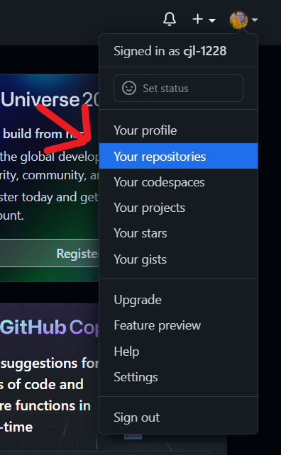
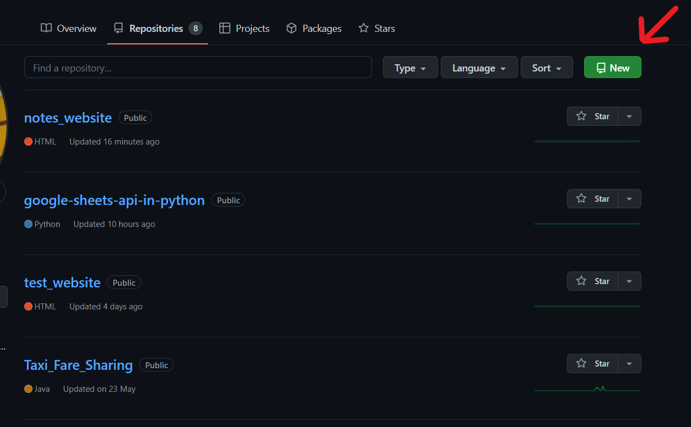
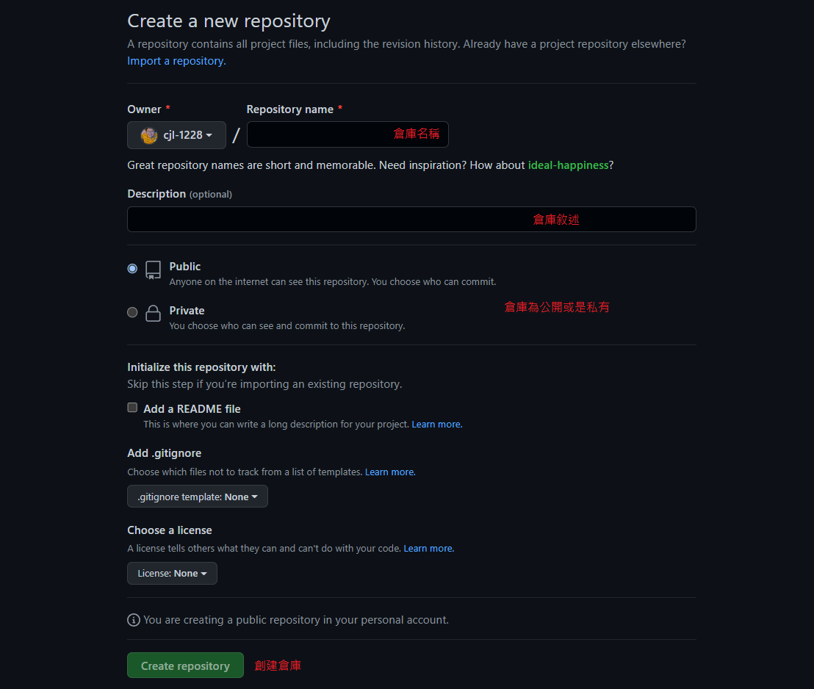
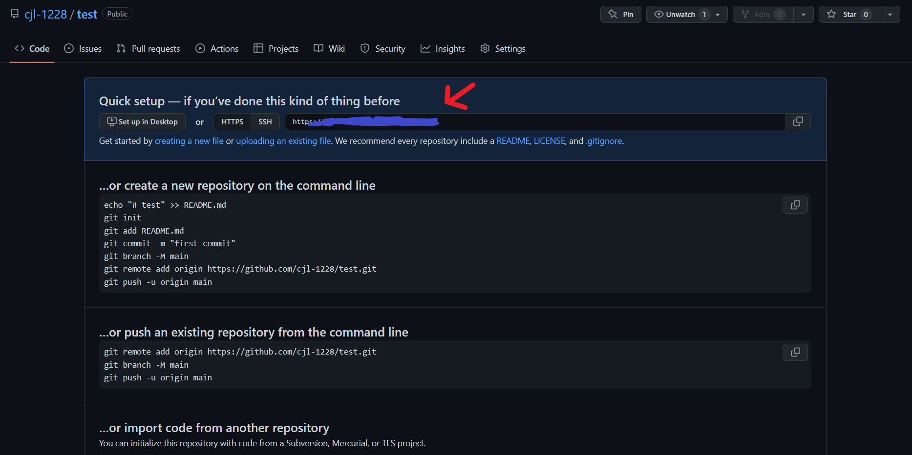
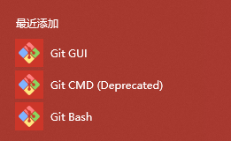
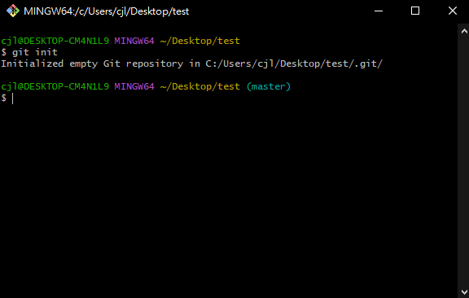
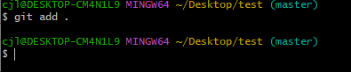
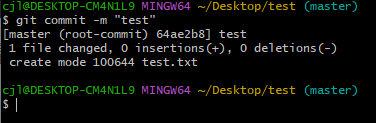
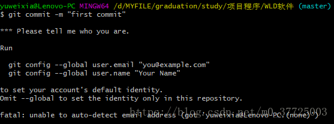
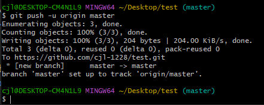

陳杰龍的筆記網站
陳杰龍的筆記網站 主頁
主頁 歸檔
歸檔 分類
分類 其他
其他 關於我
關於我 如何上傳專案到GitHub
如何上傳專案到GitHub
新建GitHub倉庫
沒有註冊過的先去官網進行註冊，註冊後按照以下步驟來新建一個GitHub的倉庫。
先去到我的倉庫，點選New按鈕來新建一個倉庫

輸入倉庫名稱後點選創建倉庫

建立成功後進入到如下頁面，箭頭指的地址複製下來。

安裝Git
如果沒有安裝過Git的點選連結安裝Git已安裝過的可以直接跳到下一步，安裝過程中沒有特殊需求的直接下一步就可以了。
上傳專案
第一步：先到專案下，有兩種方法到專案下1.直接點選工作列中的Git Bash

之後cd到自己專案下
2.直接找到專案然後右鍵Git Bash Here
第二步：通過git init命令把這個專案變成一個Git可以管理的倉庫

之後我們可以發現專案下多了一個.git檔案目錄
(如果沒看到，可在檔案總管 -> 檢視 -> 隱藏的項目✔️)
這個目錄是Git來跟蹤管理版本庫的，沒事千萬不要手動修改這個目錄裡面的檔案，不然改亂了，就把Git倉庫給破壞了。
第三步：用git add命令告訴Git，把專案下的檔案新增到倉庫

沒有任何的反應，沒有任何反應才是成功的標誌。為什麼add後面是個.呢，.的意思是將專案下的所有檔案都新增到倉庫中，我們也可以單獨新增一個檔案，直接在add後面寫上單獨的檔名就可以了，當然我們也可以add多次。
第四步：用git commit命令告訴Git，把檔案提交到倉庫

-m後面輸入的是本次提交的說明，可以輸入任意內容，當然最好是有意義的，這樣你就能從歷史記錄裡方便地找到改動記錄。 嫌麻煩不想輸入-m "xxx"行不行？確實這麼做可以這麼做，但是強烈不建議，因為輸入說明對自己對別人閱讀都很重要。
git commit命令執行成功後會告訴你，1 file changed：1個檔案被改動（我們新新增的readme.txt檔案）；1 insertions：插入了1行內容（test.txt有兩行內容）。
如果出現以下內容則需要輸入自己的電子信箱和帳密，我已經不用輸入這些了，這張圖是我網路上找來的。

按照上面給的程式碼輸入nane和email後再次執行git commit命令。
第五步：輸入git remote add origin 自己倉庫地址將本地倉庫關聯到GitHub上
然後輸入git push -u origin master將程式碼上傳到GitHub上。

執行完後，如果沒有異常，會等待幾秒，然後跳出一個讓你輸入Username和Password 的視窗，你只要輸人github的登入帳號和密碼就行了
再看看你的GitHub專案有沒有傳上去吧。